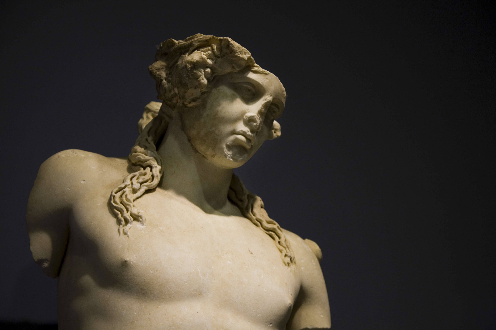

And the next one is Turkish gifted city, Izmir. Izmir city embodies the ancient Greek culture, nature and glassy sky. Besides being very good place to go on a holiday, There are too many touristic places.
Ephesus Ancient City
Thales, Anaksimenes, Ksephones, Anaxagoras and other many philosophers lived in Izmir. As we can expect, this city has numerous ancient cities, Ephesus is the most popular one among them.
Urla
Izmir has one of the most clear waters in the world. Aegean sea is located between Greece And Turkey. The magical mixture of sun, sea and green makes people mesmerized.

Mussel
If you like seafoods, undoubtedly you will love Izmir. You may find mussel in other countries but this food is kind of special. People there put some spicy rice inside mussel and pour lemon juice. Even when writing, i am getting hungry...
Meatball
Meatball is a well-known food in the whole world. But in the Izmir it is super-popular dish and you can see too many restaurants prepare the different types of meatball. People there consume this delicious food frequently.
ANCIENT ART
